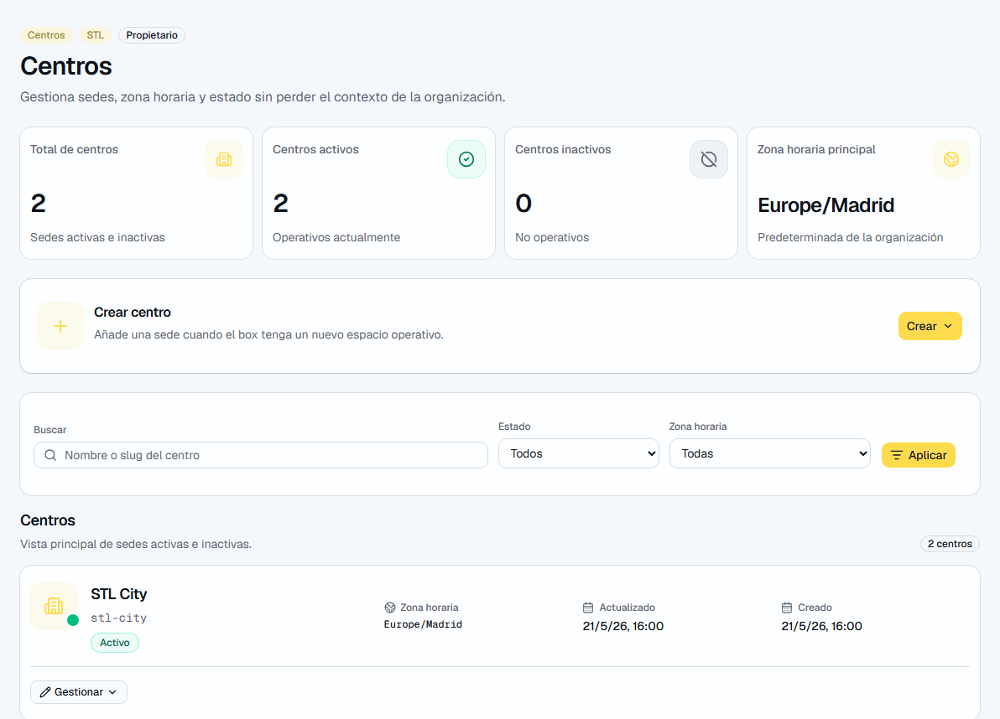
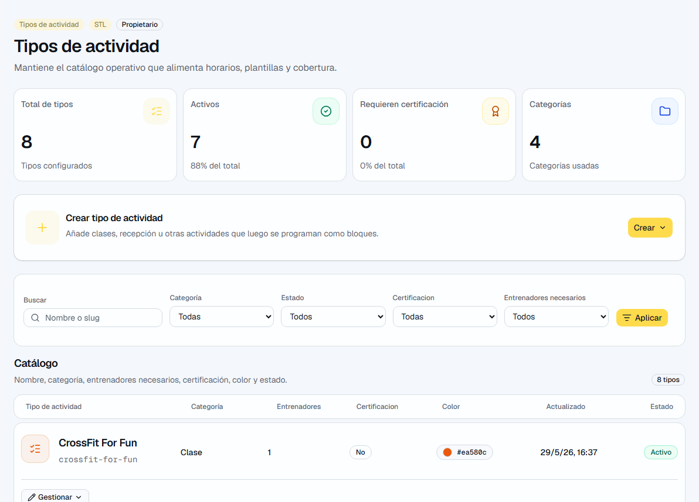

Capturas de referencia
Las imágenes ayudan a reconocer la pantalla y los elementos principales.




Gestión práctica de centros, equipo, catálogo, plantillas, horario y cobertura.
Para quien configura la operativa diaria y mantiene los datos listos para trabajar.
| Pantalla | Ruta | Sirve para |
|---|---|---|
| Equipo | /app/coaches | Alta de usuarios, invitaciones y fichas. |
| Centros | /app/centers | Crear o desactivar sedes. |
| Tipos | /app/class-types | Configurar actividades y requisitos. |
| Plantillas | /app/templates | Crear patrones semanales. |
| Horario | /app/schedule | Editar la semana real. |
| Cobertura | /app/coverage | Resolver huecos de entrenadores. |
| Jornadas | /app/work-windows | Presencia prevista del personal. |
| Mi fichaje | /app/time | Fichaje propio y revisión operativa si aplica. |
Empieza por estos recorridos. Son los que más valor dan en el uso diario.
Estas zonas no siempre son la primera parada, pero ayudan a entender la operación completa.
| Función | Dónde está | Para qué sirve |
|---|---|---|
| Cobertura | /app/coverage | Ayuda a detectar huecos y asignar entrenadores sin ir bloque por bloque a ciegas. |
| Solicitudes | /app/requests | Sirve para revisar cambios o peticiones de cobertura cuando alguien no puede cubrir un bloque. |
| Ausencias | /app/absences | Permite ver ausencias y estados que pueden afectar a horario y cobertura. |
| Jornadas previstas | /app/work-windows | Gestiona presencia prevista del equipo sin convertirla en clase ni asignación. |
| Mi fichaje | /app/time | Permite fichar, revisar la semana y gestionar correcciones según la política activa. |
| Mi cuenta y firma | /app/account | Permite actualizar datos propios, avatar y firma interna privada. |
| Documentos | /app/documents | Muestra documentos permitidos y adjuntos internos autorizados. |
| Estadísticas | /app/stats | Ofrece lectura operativa de carga, centros, tipos y avisos. |
Las imágenes ayudan a reconocer la pantalla y los elementos principales.

